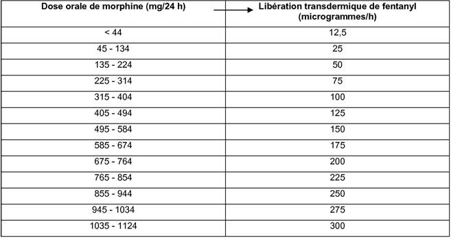
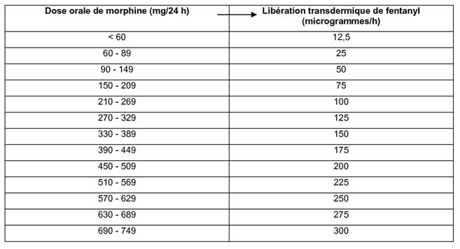

RÉSUMÉ DES CARACTÉRISTIQUES DU PRODUIT
ANSM - Mis à jour le : 07/07/2009
FENTANYL SANDOZ 25 microgrammes/heure, dispositif transdermique
2. COMPOSITION QUALITATIVE ET QUANTITATIVE
Fentanyl ......................................................................................................................................... 5,78 mg
Pour un dispositif transdermique de 10,5 cm2.
Pour la liste complète des excipients, voir rubrique 6.1.
Dispositif transdermique rectangulaire.
4.1. Indications thérapeutiques
FENTANYL CLIPA est indiqué dans le traitement des douleurs chroniques sévères qui ne peuvent être correctement traitées que par des analgésiques opioïdes.
4.2. Posologie et mode d'administration
La posologie est individuelle et basée sur les traitements opioïdes antérieurs du patient et tient compte:
· de la possibilité d'apparition d'une accoutumance,
· de l'état général actuel, de l'état médical du patient, et
· du degré de sévérité de la maladie.
La dose requise de fentanyl est ajustée individuellement et doit être évaluée régulièrement après chaque administration.
Patients recevant pour la première fois un traitement par opioïdes
Utiliser un dispositif transdermique de FENTANYL plus faiblement dosé, soit 12 microgrammes/h pour l'initiation du traitement. Chez les patients très âgés ou faibles, il est déconseillé d'entreprendre un traitement par opioïdes en utilisant FENTANYL SANDOZ, en raison de leur sensibilité connue aux traitements par opioïdes. Dans ces cas, il est préférable d'initier le traitement avec de faibles doses de morphine à libération immédiate et de prescrire FENTANYL SANDOZ après détermination de la posologie optimale.
Patients antérieurement traités par des opioïdes
Lorsque l'on remplace un traitement par opioïdes oraux ou parentéraux par un traitement par le fentanyl, la dose initiale de fentanyl doit être calculée comme suit:
1. la quantité d'analgésiques qui a été nécessaire au cours des 24 dernières heures doit être déterminée.
2. la somme ainsi obtenue doit être convertie en la dose orale correspondante de morphine, à l'aide du Tableau 1.
3. la dose correspondante de fentanyl doit être déterminée comme suit:
a) à l'aide du Tableau 2 pour les patients nécessitant une rotation des opioïdes (rapport de conversion de la morphine orale au fentanyl transdermique égal à 150:1)
b) à l'aide du Tableau 3 pour les patients dont le traitement par opioïde est stable et bien toléré (rapport de conversion de la morphine orale au fentanyl transdermique égal à 100:1)
Tableau 1: Tableau des doses équi-analgésiques des différents opioïdes
Toutes les doses indiquées dans ce tableau sont équivalentes, en termes d'effet analgésique, à 10 mg de morphine par voie parentérale.
|
|
Doses équi-analgésiques (mg) |
|
|
Substance active |
Voie parentérale (IM) |
Voie orale |
|
Morphine |
10 |
30 - 40 |
|
Hydromorphone |
1,5 |
7,5 |
|
Oxycodone |
10 - 15 |
20 - 30 |
|
Méthadone |
10 |
20 |
|
Lévorphanol |
2 |
4 |
|
Oxymorphine |
1 |
10 (voie rectale) |
|
Diamorphine |
5 |
60 |
|
Péthidine |
75 |
- |
|
Codéine |
- |
200 |
|
Buprénorphine |
0,4 |
0,8 (voie sublinguale) |
|
Cétobémidone |
10 |
20 - 30 |
Tableau 2 : Dose initiale recommandée de fentanyl transdermique en fonction de la dose orale journalière de morphine
(pour les patients nécessitant une rotation des opioïdes)

Tableau 3 : Dose initiale recommandée de fentanyl transdermique en fonction de la dose orale journalière de morphine
(pour les patients dont le traitement par opioïde est stable et bien toléré)

En associant plusieurs dispositifs transdermiques, une libération de plus de 100 microgrammes de fentanyl par heure peut être obtenue.
L'évaluation initiale de l'effet analgésique maximal de FENTANYL SANDOZ doit être réalisée 24 heures après la pose du patch. En effet, les concentrations sériques de fentanyl augmentent progressivement pendant les 24 premières heures suivant l'application du patch.
Au cours des 12 premières heures suivant le remplacement par FENTANYL SANDOZ, le patient continue à recevoir l'analgésique précédemment prescrit, à la même dose. Pendant les 12 heures suivantes, cet analgésique est administré selon les besoins.
Ajustement de la dose et traitement d'entretien
Le patch doit être remplacé toutes les 72 heures. La dose est à ajuster au cas par cas jusqu'à l'obtention d'une analgésie efficace. Pour les patients chez lesquels l'effet analgésique diminue fortement dans la période allant de 48 à 72 heures après l'application, il peut être nécessaire de renouveler le patch de fentanyl au bout de 48 heures.
Des dispositifs libérant 12 microgrammes par heure sont disponibles et sont adaptés à l'ajustement de la dose, pour des posologies faibles. Si l'effet analgésique est insuffisant à la fin de la période initiale d'application, il est possible d'augmenter la dose au bout de 3 jours jusqu'à obtention de l'effet désiré pour chaque patient. Normalement, les autres ajustements posologiques doivent être effectués par paliers de 25 microgrammes/heure, bien qu'il faille tenir compte des besoins en analgésiques supplémentaires et de l'intensité de la douleur du patient.
Les patients peuvent avoir besoin, par moments, de doses supplémentaires d'un analgésique à courte durée d'action, en cas de douleur paroxystique.
Des méthodes analgésiques supplémentaires ou différentes, ou l'administration d'opioïdes différents doivent être envisagées quand la dose de FENTANYL SANDOZ dépasse 300 microgrammes/heure.
Des symptômes de sevrage ont été signalés après relais d'un traitement prolongé par la morphine par du fentanyl transdermique, malgré une bonne efficacité analgésique. S'il apparaît des symptômes de sevrage, il est recommandé de les traiter par de faibles doses de morphine de courte durée d'action.
Modification ou arrêt du traitement
S'il s'avère nécessaire d'arrêter le traitement par FENTANYL SANDOZ, le remplacement par d'autres opioïdes doit être progressif en commençant par une dose faible et en augmentant progressivement les doses. En effet, les taux de fentanyl diminuent progressivement après le retrait du patch et il faut au moins 17 heures pour que la concentration sérique de fentanyl diminue de 50 %.
En règle générale, il faut arrêter progressivement le traitement analgésique opioïde afin d'éviter les symptômes de sevrage (nausées, vomissements, diarrhée, anxiété et tremblement musculaire). Les tables de conversion 2 et 3 ne doivent pas être utilisées pour le passage d'un traitement par FENTANYL SANDOZ à la morphine.
Mode d'administration
Immédiatement après avoir extrait le patch du sachet et avoir décollé la couche antiadhésive, appliquer le dispositif transdermique sur une région glabre de la peau du haut du corps (thorax, dos, partie supérieure du bras). Pour éliminer les poils, utiliser des ciseaux et non pas un rasoir. Avant l'application, laver soigneusement la peau à l'eau propre (sans produits nettoyants) et la sécher parfaitement. Appliquer ensuite le dispositif transdermique en appuyant légèrement la paume de la main pendant environ 30 secondes. La zone cutanée sur laquelle le patch est appliqué ne doit présenter ni microlésions (par exemple dues à une radiothérapie ou au rasage), ni irritation.
Comme le dispositif transdermique est protégé par un film externe postérieur imperméable, il peut être porté sous la douche.
Il est parfois nécessaire d'assurer une fixation supplémentaire du patch.
Si la dose est progressivement augmentée, la surface active requise peut atteindre une valeur au-delà de laquelle une augmentation supplémentaire n'est plus possible.
Durée d'administration
Il faut renouveler le patch au bout de 72 heures. S'il s'avère nécessaire de le renouveler plus rapidement chez un patient donné, il faut attendre au moins 48 heures pour le renouvellement faute de quoi les concentrations moyennes de fentanyl risquent de devenir excessives. Il faut changer de site d'application lors de chaque renouvellement du patch. Il faut respecter un intervalle de 7 jours avant d'appliquer un nouveau patch sur la même région de la peau. L'effet analgésique peut persister quelque temps après le retrait du dispositif transdermique.
S'il reste des traces du dispositif transdermique sur la peau après le retrait, on peut les éliminer en utilisant beaucoup de savon et d'eau. Ne jamais utiliser d'alcool ou d'autres solvants pour le nettoyage car ils risqueraient de pénétrer dans la peau en raison de l'effet du patch.
Utilisation chez les patients âgés
Il faut surveiller étroitement les patients âgés et au besoin réduire la dose (voir rubriques 4.4 et 5.2).
Insuffisance hépatique et rénale
En cas d'insuffisance hépatique ou rénale, il faut assurer une surveillance soigneuse et au besoin réduire la dose (voir rubrique 4.4).
Chez l'enfant (2 à 16 ans)
Mode d'administration
Chez le jeune enfant, le patch doit être appliqué préférentiellement au niveau de la partie supérieure du dos pour éviter que l'enfant puisse retirer le patch.
Posologie
FENTANYL SANDOZ doit être administré uniquement aux enfants âgés de 2 à 16 ans tolérants aux opioïdes majeurs à dose stable et recevant une dose équivalente à au moins 30 mg de morphine orale par jour.
Pour calculer la dose de FENTANYL SANDOZ à administrer à partir de la dose de morphine orale par 24 h, utiliser la table de conversion ci-dessous, fournie à titre indicatif.
Doses de FENTANYL SANDOZ recommandées à titre indicatif en fonction des doses de morphine/24 heures1
|
|
Voie orale |
FENTANYL |
|
Dose de morphine/24 h |
Dispositif transdermique en |
|
|
(mg/j) |
microgrammes/h |
|
|
Chez l'enfant2 |
30 - 44 |
12 |
|
45 - 134 |
25 |
1Dans les études cliniques, ces intervalles de dose de morphine orale ont été utilisés comme base de conversion à FENTANYL SANDOZ.
2Pour des doses de morphine supérieures à 134 mg/24 heures, la table de conversion à utiliser est la même pour les enfants et pour les adultes.
Les données issues des essais cliniques sont limitées chez les enfants recevant plus de 90 mg de morphine par voie orale par jour. Dans les études menées chez l'enfant, la dose de fentanyl par voie transdermique nécessaire a été calculée de la façon suivante: 30 mg à 45 mg de morphine orale par jour ou une dose d'opioïde équivalente correspond à un dispositif transdermique de FENTANYL à 12 µg/h. Cette table de conversion chez l'enfant ne s'applique qu'au passage de la morphine orale (ou son équivalent) à FENTANYL, dispositif transdermique. La table de conversion ne doit pas être utilisée pour le passage d'un traitement par FENTANYL SANDOZ à la morphine ou aux autres opioïdes en raison du risque de surdosage.
L'effet antalgique de la première dose de FENTANYL SANDOZ n'est pas optimal pendant les 24 premières heures. C'est pourquoi, il est recommandé de poursuivre les antalgiques antérieurement utilisés pendant les 12 premières heures suivant la pose du premier patch. Pendant les 12 heures suivantes, ces antalgiques pourront être utilisés en fonction des besoins du patient.
Etant donné que le pic des concentrations plasmatiques en fentanyl apparaît après 12 à 24 h de traitement, une surveillance de la survenue des effets indésirables, en particulier bradycardie, bradypnée et hypoventilation, est recommandée pendant au moins 48 h après initiation d'un traitement par FENTANYL par voie transdermique ou après une augmentation de dose (voir aussi rubrique 4.4).
Adaptation posologique et traitement d'entretien
En cas d'effet antalgique insuffisant de FENTANYL SANDOZ, il peut être nécessaire d'administrer des doses supplémentaires de morphine ou d'un autre opioïde à courte durée d'action. En fonction des besoins antalgiques supplémentaires et de l'état douloureux de l'enfant, il peut être nécessaire d'augmenter la posologie. Les adaptations posologiques devront être réalisées par paliers de 12 µg/h.
· Hypersensibilité au principe actif ou à l'un des excipients.
· Douleur aiguë ou postopératoire, car l'ajustement de la dose est impossible lors d'une utilisation de courte durée.
· Perturbation grave du système nerveux central.
· Chez l'enfant (2 à 16 ans): patients n'ayant jamais reçu d'opioïdes ou ne tolérants pas les opioïdes.
4.4. Mises en garde spéciales et précautions d'emploi
Ce produit doit uniquement être utilisé dans le cadre d'un traitement intégré de la douleur, comprenant une évaluation médicale, sociale et psychologique appropriée.
Le traitement par FENTANYL SANDOZ doit toujours être instauré par un médecin expérimenté, connaissant bien la pharmacocinétique des dispositifs transdermiques de fentanyl et le risque d'hypoventilation grave.
Quand un patient a présenté un évènement indésirable grave, il faut le surveiller pendant 24 heures après le retrait du dispositif transdermique à cause de la demi-vie du fentanyl (voir rubrique 5.2).
Dans les douleurs chroniques non cancéreuses, il est préférable d'initier le traitement avec un opioïde fort à libération immédiate (par exemple la morphine) et de prescrire FENTANYL SANDOZ après détermination de l'efficacité et de la dose optimale de l'opioïde fort.
Ne pas découper le dispositif transdermique car il n'existe aucune information sur la qualité, l'efficacité et la tolérance des fragments de patchs.
Si le patient a besoin de doses dépassant 500 mg d'équivalent de morphine, il est recommandé de réévaluer le traitement par opioïde.
Les effets indésirables les plus fréquents après l'administration des doses usuelles sont somnolence, confusion mentale, nausées, vomissements et constipation. Les premiers de ces symptômes sont transitoires et il faut en rechercher la cause s'ils persistent. Par contre, la constipation ne disparaît pas si le traitement est poursuivi. Tous ces effets étant prévisibles, ils doivent être anticipés, en particulier la constipation, afin d'optimiser le traitement. Il est souvent nécessaire d'administrer un traitement correctif (voir rubrique 4.8).
L'utilisation concomitante de buprénorphine, nalbuphine ou pentazocine n'est pas recommandée (voir aussi rubrique 4.5).
Douleur paroxystique
Les études montrent que presque tous les patients ont besoin, en plus du traitement par le patch de fentanyl, d'un traitement complémentaire par des médicaments à libération immédiate, pour traiter les douleurs paroxystiques.
Dépression respiratoire
Comme avec tous les opioïdes forts, certains patients peuvent présenter une dépression respiratoire sous traitement par FENTANYL SANDOZ et les patients doivent être surveillés à la recherche de cet effet. La dépression respiratoire peut persister après le retrait du patch.
L'incidence de la dépression respiratoire augmente avec la dose de fentanyl. Les substances agissant sur le système nerveux central (SNC) peuvent aggraver la dépression respiratoire (voir rubrique 4.5).
En cas de dépression respiratoire préexistante, le fentanyl doit être utilisé avec prudence et à des doses réduites.
Maladie pulmonaire chronique
En cas de maladie pulmonaire chronique, obstructive ou autre, le fentanyl peut induire des réactions indésirables plus graves; chez ces patients, les opioïdes peuvent diminuer la stimulation respiratoire et augmenter la résistance des voies respiratoires.
Dépendance médicamenteuse
Une accoutumance et une dépendance physique et psychique peuvent apparaître après l'administration répétée d'opioïdes, mais ces phénomènes sont rares dans le cadre du traitement des douleurs cancéreuses.
Augmentation de la pression intracrânienne
FENTANYL SANDOZ doit être utilisé avec prudence chez les patients risquant d'être particulièrement sensibles aux effets intracrâniens du CO2, par exemple les patients présentant des signes d'augmentation de la pression intracrânienne, des troubles de la conscience ou un coma.
Cardiopathies
Les opioïdes peuvent provoquer une hypotension, en particulier en cas d'hypovolémie. La prudence est donc de rigueur lors du traitement des patients présentant une hypotension et/ou une hypovolémie. Le fentanyl peut induire une bradycardie. FENTANYL SANDOZ doit être utilisé avec prudence chez les patients présentant des bradyarythmies.
Insuffisance hépatique
Comme le fentanyl est transformé en métabolites inactifs dans le foie, son élimination risque d'être retardée en cas de pathologie hépatique. En cas d'insuffisance hépatique, il faut surveiller soigneusement les patients et réduire la dose, si nécessaire.
Insuffisance rénale
Moins de 10 % du fentanyl est excrété sous forme inchangée par les reins et, contrairement à la morphine, on ne connaît pas de métabolites actifs éliminés par voie rénale. Les résultats obtenus avec le fentanyl intraveineux chez des patients souffrant d'insuffisance rénale suggèrent que le volume de distribution du fentanyl peut être modifié par la dialyse. Ceci peut affecter les concentrations sériques. Le traitement de patients présentant une insuffisance rénale par du fentanyl transdermique doit s'accompagner d'une surveillance soigneuse à la recherche de signes de toxicité du fentanyl et une réduction posologique doit être envisagée si nécessaire.
Patients fébriles/exposés à une chaleur extérieure
Les augmentations importantes de la température corporelle peuvent potentiellement accélérer l'absorption du fentanyl. C'est pourquoi les patients fébriles doivent être surveillés à la recherche d'effets indésirables des opioïdes. Il ne faut pas exposer le site d'application du patch à des sources extérieures de chaleur, par exemple sauna.
Patients âgés
Les résultats des études menées après l'administration intraveineuse de fentanyl suggèrent que la clairance du produit peut être réduite et sa demi-vie prolongée chez les personnes âgées. En outre, les patients âgés risquent d'être plus sensibles au principe actif que les patients plus jeunes.
Cependant, les études menées avec le dispositif transdermique de fentanyl chez des patients âgés montrent que la pharmacocinétique du fentanyl ne diffère pas significativement de celle observée chez les patients jeunes, même si les concentrations sériques sont généralement plus élevées. Chez les patients âgés ou cachectiques, il faut assurer une surveillance soigneuse et réduire la dose, si nécessaire.
Enfants (de 2 à 16 ans)
FENTANYL SANDOZ ne doit pas être administré chez les enfants n'ayant jamais reçu d'opioïdes (voir rubriques 4.2 et 4.3). Il existe un risque d'hypoventilation grave ou pouvant mettre en jeu le pronostic vital indépendamment de la dose de FENTANYL SANDOZ administrée (voir rubrique 4.2).
FENTANYL CLIPA n'a pas été étudié chez l'enfant de moins de 2 ans. CLIPA doit être administré uniquement aux enfants de 2 ans ou plus ayant déjà reçu et toléré des opioïdes (voir rubriques 4.2 et 4.3). FENTANYL SANDOZ ne doit pas être utilisé chez l'enfant de moins de 2 ans.
Afin de prévenir une ingestion accidentelle par l'enfant, choisir avec prudence le site d'application de FENTANYL SANDOZ (voir rubrique 4.2) et vérifier attentivement la bonne adhésion du dispositif.
Chez l'enfant, il n'est pas recommandé d'utiliser FENTANYL SANDOZ dans les cas suivants:
· dans le traitement des douleurs aiguës ou chez les patients nécessitant une analgésie opioïde de courte durée d'action;
· dans le traitement de la douleur postopératoire, y compris après la sortie du patient ou après des opérations effectuées sur une journée (par exemple amygdalectomie);
· dans le traitement des douleurs modérées;
· dans le traitement des douleurs transitoires (par exemple utilisation en fonction des besoins).
Allaitement
Le fentanyl étant excrété dans le lait maternel, l'allaitement doit être interrompu pendant le traitement par FENTANYL SANDOZ (voir aussi rubrique 4.6).
Myasthénie
Des réactions (myo)cloniques non épileptiques sont possibles. La prudence s'impose lors du traitement des patients présentant une myasthénie.
Interactions
L'utilisation avec les derivés de l'acide barbiturique, la buprénorphine, la nalbuphine et la pentazocine doit généralement être évitée (voir rubrique 4.5).
4.5. Interactions avec d'autres médicaments et autres formes d'interactions
L'utilisation concomitante de dérivés de l'acide barbiturique doit être évitée, car elle risque d'augmenter l'effet dépresseur respiratoire du fentanyl.
L'utilisation concomitante de buprénorphine, nalbuphine ou pentazocine n'est pas recommandée. Elles ont une forte affinité avec les récepteurs opioïdes ayant une activité intrinsèque relativement faible et donc diminuent partiellement l'effet analgésique du fentanyl et peuvent induire un syndrome de sevrage chez les patients dépendant des opioïdes (voir aussi rubrique 4.4).
L'utilisation concomitante d'autres produits exerçant un effet dépresseur sur le SNC peut induire des effets additifs dépresseurs et une hypoventilation, une hypotension ainsi qu'une sédation profonde, voire un coma.
Les substances qui ont un effet dépresseur sur le SNC sont les suivantes:
· les opioïdes,
· les anxiolytiques et tranquillisants,
· les hypnotiques,
· les produits pour anesthésie générale,
· les phénothiazines,
· les myorelaxants squelettiques,
· les antihistaminiques sédatifs,
· les boissons alcoolisées.
En conséquence, l'usage concomitant des médicaments susmentionnés exige une surveillance du patient.
Les IMAO augmentent l'effet des analgésiques opioïdes, en particulier en cas d'insuffisance cardiaque. Le fentanyl ne doit donc pas être utilisé dans les 14 jours suivant l'arrêt d'un traitement par des IMAO.
Le fentanyl, principe actif ayant une clairance élevée, est rapidement et largement métabolisé, essentiellement par l'iso-enzyme CYP3A4. L'administration d'itraconazole (un puissant inhibiteur de l'iso-enzyme CYP3A4) à raison de 200 mg/jour par voie orale pendant 4 jours n'a pas eu d'effet significatif sur la pharmacocinétique du fentanyl intraveineux. Chez quelques sujets, les concentrations plasmatiques ont toutefois augmenté. L'administration orale de ritonavir (l'un des plus puissants inhibiteurs du CYP3A4) a réduit de deux tiers la clairance du fentanyl intraveineux et doublé sa demi-vie. L'utilisation simultanée d'inhibiteurs puissants du CYP3A4 (par exemple ritonavir) et de fentanyl transdermique peut aboutir à une augmentation des concentrations plasmatiques de fentanyl. Ce phénomène peut accentuer ou prolonger non seulement ses effets thérapeutiques mais aussi ses effets indésirables, ce qui peut provoquer une dépression respiratoire sévère. Dans ces situations, il faut intensifier les soins et la surveillance des patients. L'utilisation concomitante du ritonavir ou d'autres inhibiteurs puissants du CYP3A4 et du fentanyl transdermique n'est pas recommandée, à moins que le patient soit sous étroite surveillance.
La sécurité d'emploi du fentanyl pendant la grossesse n'a pas été établie. Des études effectuées chez l'animal ont mis en évidence une toxicité sur la reproduction (voir rubrique 5.3). Le risque potentiel en clinique n'est pas connu. Le fentanyl ne doit être utilisé pendant la grossesse qu'en cas de nécessité absolue.
Un traitement prolongé pendant la grossesse risque de provoquer un syndrome de sevrage chez le nourrisson.
Il est déconseillé d'utiliser du fentanyl pendant le travail et l'accouchement (y compris par césarienne) car le fentanyl franchit la barrière placentaire et peut provoquer une dépression respiratoire chez le nouveau-né.
Le fentanyl est excrété dans le lait maternel et peut provoquer une sédation et une dépression respiratoire chez le nourrisson allaité. L'allaitement doit donc être interrompu pendant au moins 72 heures après le retrait de FENTANYL SANDOZ (voir aussi rubrique 4.4)
4.7. Effets sur l'aptitude à conduire des véhicules et à utiliser des machines
FENTANYL SANDOZ perturbe considérablement l'aptitude à conduire et à utiliser des machines. Ce risque est particulièrement élevé au début du traitement, lors des changements de dose et en cas de consommation concomitante d'alcool ou de tranquillisants. Les patients dont l'état est stabilisé sous traitement à une posologie donnée ne sont pas toujours soumis à des restrictions.
Les patients doivent donc demander à leur médecin s'ils peuvent ou non conduire et utiliser des machines.
La fréquence des réactions indésirables est définie comme suit: très fréquent (1/10), fréquent (1/100, < 1/10), peu fréquent (1/1 000, < 1/100), rare (1/10 000, < 1/1 000), très rare (< 1/10 000)
L'effet indésirable le plus grave du fentanyl est la dépression respiratoire.
Affections cardiaques
Peu fréquent: tachycardie, bradycardie.
Rare: arythmie.
Affections du système nerveux
Très fréquent: céphalées, sensations vertigineuses.
Peu fréquent: tremblement, paresthésies, anomalies du langage.
Très rare: ataxie, crises convulsives (y compris crises cloniques et crises de grand mal).
Affections oculaires
Très rare: amblyopie.
Affections respiratoires, thoraciques et médiastinales
Peu fréquent: dyspnée, hypoventilation.
Très rare: dépression respiratoire, apnée.
Affections gastro-intestinales
Très fréquent: nausées, vomissements, constipation.
Fréquent: sécheresse de la bouche, dyspepsie.
Peu fréquent: diarrhée.
Rare: hoquet.
Très rare: flatulences douloureuses, iléus.
Affections du rein et des voies urinaires
Peu fréquent: rétention d'urine.
Très rare: cystalgie, oligurie.
Affections de la peau et du tissu sous-cutané
Très fréquent: sueurs, prurit.
Fréquent: réactions cutanées au site d'application.
Peu fréquent: exanthème, érythème.
Le rash, l'érythème et le prurit disparaissent généralement en l'espace d'une journée après le retrait du patch.
Affections vasculaires
Peu fréquent: hypertension, hypotension.
Rare: vasodilatation.
Troubles généraux
Rare: œdèmes, sensation de froid.
Affections du système immunitaire
Très rare: anaphylaxie.
Affections psychiatriques
Très fréquent: somnolence.
Fréquent: sédation, nervosité, perte de l'appétit
Peu fréquent: euphorie, amnésie, insomnie, hallucinations, agitation.
Très rare: idées délirantes, états d'excitation, asthénie, dépression, anxiété, confusion, troubles sexuels, syndrome de sevrage.
Autres effets indésirables
Pas d'informations (impossible à évaluer à la lumière des données disponibles): L'usage prolongé du fentanyl peut conduire à l'apparition d'une accoutumance et d'une dépendance physique et psychique. Après le relais par FENTANYL SANDOZ d'autres analgésiques opioïdes ou après l'arrêt brutal du traitement, les patients peuvent présenter le syndrome de sevrage des opioïdes (avec par exemple les symptômes suivants: nausées, vomissements, diarrhée, anxiété et frissons).
Chez l'enfant (2 à 16 ans)
Le profil des évènements indésirables chez les enfants et les adolescents traités par les dispositifs transdermiques de fentanyl a été similaire à celui observé chez les adultes. Chez l'enfant, il n'a pas été identifié de risque supérieur à celui attendu lors de l'utilisation d'opioïdes dans le traitement des douleurs d'origine cancéreuse et il ne semble pas qu'il y ait de risque pédiatrique spécifique associé à l'utilisation de FENTANYL SANDOZ chez l'enfant dès 2 ans dès lors qu'il est utilisé selon les recommandations définies.
Les effets indésirables les plus fréquemment rapportés au cours des essais cliniques chez l'enfant ont été la fièvre, les vomissements, et les nausées.
Symptômes
Les symptômes d'un surdosage en fentanyl consistent en une accentuation de ses effets pharmacologiques, par exemple léthargie, coma, dépression respiratoire avec respiration de Cheyne-Stokes et/ou cyanose. On peut aussi noter une hypothermie, une diminution du tonus musculaire, une bradycardie et une hypotension. La toxicité se traduit par les signes suivants: sédation profonde, ataxie, myosis, convulsions et dépression respiratoire, laquelle est le principal symptôme.
Traitement
Pour le traitement de la dépression respiratoire, il faut prendre des mesures immédiates, notamment retirer le patch et stimuler le patient physiquement ou verbalement. Ces actions peuvent être suivies par l'administration d'un antagoniste spécifique des opioïdes tel que la naloxone.
Chez l'adulte, il est recommandé d'utiliser une dose initiale de 0,4-2 mg de chlorhydrate de naloxone par voie intraveineuse. Au besoin, la même dose peut être administrée toutes les 2 ou 3 minutes ou être administrée en perfusion continue à raison de 2 mg dans 500 ml de solution injectable de chlorure de sodium à 9 mg/ml (0,9 %) ou de solution à 50 mg de glucose par ml (5 %). Le débit de la perfusion doit être ajusté en fonction des injections précédentes en bolus et de la réponse individuelle du patient. Si l'administration intraveineuse est impossible, le chlorhydrate de naloxone peut aussi être administré par voie intramusculaire ou sous-cutanée.
L'effet apparaît plus lentement après administration intramusculaire ou sous -cutanée qu'après administration intraveineuse. L'effet dure plus longtemps après administration intramusculaire qu'intraveineuse. La dépression respiratoire provoquée par un surdosage peut persister plus longtemps que l'effet de l'antagoniste des opioïdes. La neutralisation de l'effet antalgique peut susciter des douleurs aiguës et une libération de catécholamines. Si l'état clinique du patient l'exige, il faut le transférer en unité de soins intensifs. En cas d'hypotension sévère ou persistante, il faut envisager la possibilité d'une hypovolémie et traiter le patient par un apport liquidien parentéral approprié.
5. PROPRIETES PHARMACOLOGIQUES
5.1. Propriétés pharmacodynamiques
Classe pharmacothérapeutique: opioïdes; dérivés de la phénylpipéridine, code ATC: N02AB03.
Le fentanyl est un analgésique opioïde qui interagit principalement sur les récepteurs . Ses principaux effets thérapeutiques sont analgésiques et sédatifs. Les concentrations sériques de fentanyl qui induisent un effet analgésique minimal chez les patients non traités antérieurement par des opioïdes fluctuent entre 0,3 et 1,5 ng/ml; la fréquence des effets indésirables augmente lorsque les concentrations plasmatiques dépassent 2 ng/ml.
La concentration minimale efficace de fentanyl et la concentration provoquant des réactions indésirables augmentent avec le développement d'une accoutumance. La tendance au développement d'une accoutumance est extrêmement variable suivant les individus.
Chez l'enfant
La sécurité d'emploi des dispositifs transdermiques de fentanyl a été évaluée au cours de 3 études en ouvert chez 293 enfants âgés de 2 à 18 ans présentant des douleurs chroniques, parmi lesquels 66 enfants étaient âgés de 2 à 6 ans. Dans ces études, une dose quotidienne de 30 à 45 mg de morphine équivalait à un dispositif transdermique de fentanyl dosé à 12 µg/h. Des doses d'initiation de 25 µg/h et plus ont été utilisées chez 181 patients ayant été précedemment traités par des doses quotidiennes d'opioïde équivalentes à au moins 45 mg de morphine orale.
5.2. Propriétés pharmacocinétiques
Après l'application de FENTANYL SANDOZ, le fentanyl est absorbé de façon continue à travers la peau sur une période de 72 heures. Grâce à la matrice de polymère et à la diffusion du fentanyl au travers des couches cutanées, la vitesse de libération reste relativement constante.
Absorption
Après la première application de FENTANYL SANDOZ, les concentrations sériques de fentanyl augmentent progressivement et atteignent généralement un plateau au bout de 12 à 24 heures, après quoi elles restent relativement stables pendant le reste de l'intervalle de 72 heures entre l'application de deux patchs successifs. Les concentrations sériques de fentanyl atteintes dépendent de la taille du dispositif transdermique.
Dans toutes les situations pratiques, la concentration sérique d'équilibre est atteinte après la deuxième application de 72 heures et se maintient pendant les applications ultérieures d'un patch de même taille.
Distribution
Le taux de liaison du fentanyl aux protéines plasmatiques est de 84 %.
Biotransformation
Le fentanyl est principalement métabolisé par le foie, par l'iso-enzyme CYP3A4. Son métabolite principal, le norfentanyl, est inactif.
Elimination
Quand le traitement par FENTANYL SANDOZ est arrêté, les concentrations sériques de fentanyl diminuent progressivement, en chutant d'environ 50 % en l'espace de 13-22 heures chez l'adulte et de 22-25 heures chez l'enfant. La poursuite de l'absorption du fentanyl à partir de la peau explique que la réduction des concentrations sériques soit plus lente qu'après une perfusion intraveineuse.
Environ 75 % du fentanyl sont excrétés dans les urines, essentiellement sous la forme de métabolites, avec moins de 10 % sous la forme active inchangée. Environ 9 % de la dose sont retrouvés dans les selles, essentiellement sous forme métabolisée.
Pharmacocinétique dans des situations cliniques particulières
Chez les patients âgés et affaiblis, l'élimination du fentanyl peut être réduite, ce qui conduit à un allongement de la demi-vie terminale. En cas d'insuffisance rénale ou hépatique, l'élimination du fentanyl peut être altérée en raison des modifications des protéines plasmatiques et de la clairance métabolique, ce qui aboutit à une augmentation des concentrations sériques.
Chez l'enfant
Dans la population pédiatrique, la clairance ajustée au poids corporel (L/h/kg) s'avère être 82 % plus élevée chez les enfants âgés de 2 à 5 ans et 25 % plus importante chez les enfants de 6 à 10 ans comparée à celle observée chez les enfants de 11 à 16 ans dont la clairance est probablement similaire à celle des adultes. Ces résultats ont été pris en compte pour déterminer la posologie.
5.3. Données de sécurité préclinique
Les données non cliniques issues des études conventionnelles de pharmacologie de sécurité, toxicologie en administration répétée et génotoxicité n'ont pas révélé de risque particulier pour l'homme.
Les études animales ont montré une réduction de la fertilité et une augmentation de la mortalité fœtale chez le rat. Cependant, aucun effet tératogène n'a été démontré.
Aucune étude de carcinogénicité à long terme n'a été réalisée.
Matrice/réservoir: huile de soja raffinée, résine de colophane hydrogénée, poly (2-éthylhexyl-acrylate, vinylacétate),
Feuillet de polyéthylène téréphtalate.
Feuillet siliconé de polyéthylène téréphtalate.
Afin d'éviter toute interférence avec les propriétés adhésives de FENTANYL CLIPA, il convient de ne pas appliquer de crème, d'huile, de lotion ou de poudre sur la surface de la peau où le dispositif transdermique FENTANYL SANDOZ est appliqué.
3 ans.
6.4. Précautions particulières de conservation
Pas de précautions particulières de conservation.
6.5. Nature et contenu de l'emballage extérieur
Dispositif transdermique en sachet scellé (PET/PE/Alu). Boîte de 5, 7, 10, 14 ou 20, avec un dispositif de récupération.
6.6. Précautions particulières d’élimination et de manipulation
Les dispositifs transdermiques ne doivent pas être coupés ou leur structure endommagée.
Application du système transdermique
Au niveau du site d'application, couper les poils avant application (ne pas raser). Si le site d'application doit être nettoyé avant application, le faire à l'eau. Le savon, l'huile, les lotions ou tout autre produit risquant d'irriter la peau ou d'en modifier les caractéristiques doivent être proscrits.
Chez l'enfant
Appliquer préférentiellement le dispositif au niveau de la partie supérieure du dos. Aucune donnée de tolérance et de pharmacocinétique n'est disponible pour les autres sites d'application.
Elimination des dispositifs
Après retrait chaque dispositif usagé doit être plié en deux, la face adhésive étant tournée vers l'intérieur, puis placé sous un des rabats autocollants du système de récupération fourni dans l'emballage. Le système sera ensuite replié et refermé par la languette adhésive, et placé hors de portée. La pochette ainsi formée, contenant les dispositifs utilisés, ainsi que les dispositifs non utilisés doivent être retournés à la pharmacie.
7. TITULAIRE DE L’AUTORISATION DE MISE SUR LE MARCHE
SANDOZ
49, AVENUE GEORGES POMPIDOU
92300 LEVALLOIS-PERRET
8. NUMERO(S) D’AUTORISATION DE MISE SUR LE MARCHE
· 393 905-4 ou 34009 393 905 4 3: dispositif transdermique en sachet (PET/PE/Alu). Boîte de 5 avec système de récupération.
· 393 906-0 ou 34009 393 906 0 4: dispositif transdermique en sachet (PET/PE/Alu). Boîte de 7 avec système de récupération.
· 393 907-7 ou 34009 393 907 7 2: dispositif transdermique en sachet (PET/PE/Alu). Boîte de 10 avec système de récupération.
· 393 908-3 ou 34009 393 908 3 3: dispositif transdermique en sachet (PET/PE/Alu). Boîte de 14 avec système de récupération.
· 393 910-8 ou 34009 393 910 8 3: dispositif transdermique en sachet (PET/PE/Alu). Boîte de 20 avec système de récupération.
9. DATE DE PREMIERE AUTORISATION/DE RENOUVELLEMENT DE L’AUTORISATION
[à compléter par le titulaire]
10. DATE DE MISE A JOUR DU TEXTE
[à compléter par le titulaire]
Sans objet.
12. INSTRUCTIONS POUR LA PREPARATION DES RADIOPHARMACEUTIQUES
Sans objet.
Stupéfiant: prescription limitée à 28 jours.
Délivrance fractionnée de 14 jours.
Prescription sur ordonnance répondant aux spécifications fixées par l'arrêté du 31 mars 1999.